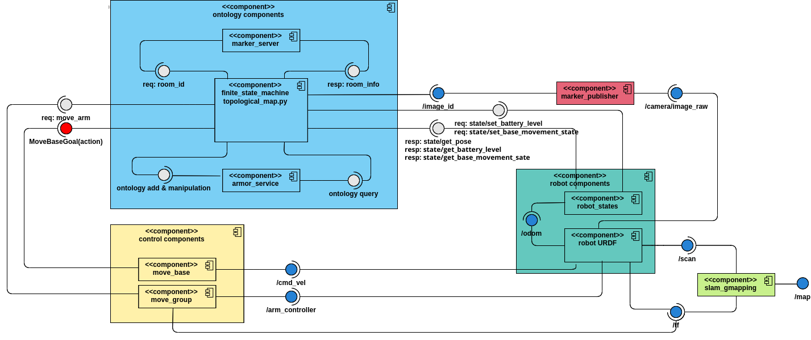
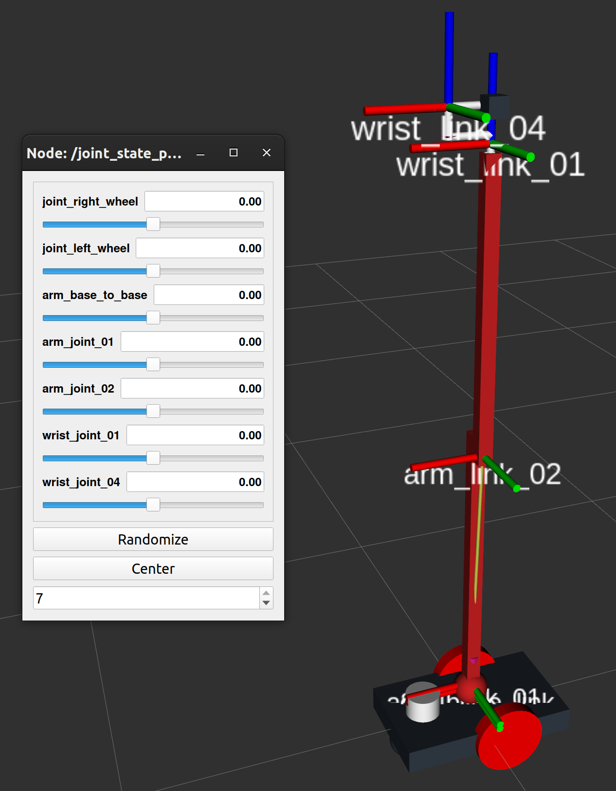

Software Architucture
The software architucture is represented in the following figure.
{kind=link}
The components of this software architucture can be described as follows:
robot URDF
The robot URDF in this package consists of a mobile base link provided with two cylindrical wheels, caster front and a manipulator with 5dof. This robot uses a laser scanner to detect the obstacles, and a camera for scanning the provided markers.
{kind=link}
robot-states
In order to simulate the states of the robot and its stimulus, the approach presented in the arch_skeleton example is used with some changes (e.g. battery level, base movement state).
marker_publisher
The image processing part is done using OpenCV with the method presented in aruco_ros. In order to convert between ROS Image messages and OpenCV images, cv_bridge package is used.
marker_server
Implemnts a service which responses the information for each room in the semantic map by getting call request with argument indicationg the room id.
move_group
The controller node for robot manipulator arm. The package my_moveit which is auto generated by
MoveIt for robot URDF, implements this node. It provides joint trajectory effort
controllers for robot arm in order to reach the desired joints configuration.
move_base
The node which is responsible for navigation. In this package, move_base node is used for finding the path between robot current position and target room position. It also drives the robot base link to move through the found path.
slam_gmapping
slam_gmapping is a widely used ROS package for mapping purposes. It uses robot laser scanner data along with robot base frame position in order to find robot in the map. Since there is map file provided in this package, it generates the map in an online manner.
finite state machin
The main part of software architucture, defines the states and transitions for the finite state
machine of the robot behaviour. It is implemented using the method presented in smach
It also uses topological_map.py helper script which is based on aRMOR
to update the ontology while the process is running.
{kind=link}
armor_service
It is used for manipulating the ontology and getting information in a query throgh finite_state_machine node.